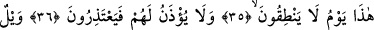
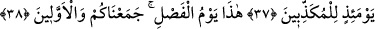
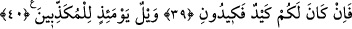

BU, AYIRIM GÜNÜDÜR
35. Bu, (kâfirlerin) konuşamayacağı bir gündür.
36. Onlara izin de verilmez ki (sözde) mâzeretlerini beyân etsinler.
37. O gün, (hakîkatleri) yalan sayanların vay hâline!
38. (O zaman şöyle denir:) Bu, ayırım günüdür. Sizi ve sizden öncekileri bir araya
getirdik.
39. (Azaptan kurtulmanız için) bir hileniz varsa, gösterin bana hilenizi!
40. O gün, (hakîkatleri) yalan sayanların vay hâline!
Bu âyet-i kerîme onların cehenneme girecekleri zamana işâret etmektedir. Âyet-i
kerîmeye şöyle mânâ verilebilir; bu onların hiçbir şey konuşamayacakları gündür.
Çünkü sual, cevap, hesaba çekilme zamanı bundan önce geçmiştir. Kıyâmet günü uzun
bir gündür. Bu günün çeşitli aşamaları, merhaleleri vardır. Onlar bu uzun ve aşaması
çok olan günün bâzı vakitlerinde konuşabilecekken bâzılarında konuşamayacaklardır.
Allah her vakti “yevm/gün” kelimesiyle ifâde buyurmuştur.
Bu âyet-i kerîmeyi, “bu gün, onların kendilerine fayda verecek hiçbir şeyi
konuşamayacakları gündür” şeklinde tefsir etmek de mümkündür. Çünkü insanın
kendisine yararlı bir şeyi konuşamaması demek hiç konuşamaması demek gibidir.
Kâşânî ise bu âyete şöyle anlam vermektedir: Onlar bugün konuşamazlar. Çünkü
konuşma aracı dillerini kaybetmişlerdir. Ağızlarına mühür vurulmak sûretiyle
kendilerine konuşma izni verilmemektedir.
Bâzıları ise bu âyet-i kerîmeyi şöyle anlıyorlar: Onlar içine düştükleri şiddetli
şaşkınlık ve- dehşetten dolayı konuşamayacaklardır.
Ebû Osman (rh.) ise bu âyet-i kerîmeyi şöyle tefsîr eder: Allah’ın rablık heybeti ve
işledikleri günahların utancı onları susturacaktır. Nitekim Şeyh Sa’dî (rh.) bir Farsça
beyitinde bu gerçeği şöyle dile getiriyor:
Gaflet yakasından başını şimdi kaldır,
Yoksa yarın utançla önüne bakarsın.